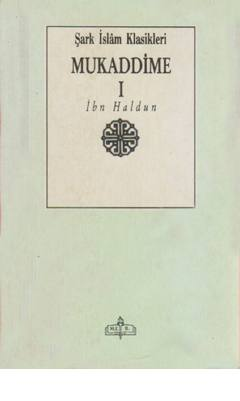

M1Ibn Haldunning mashhur tarix va sivilizatsiya falsafasiga bag'ishlangan "Mukaddima" asari.
Ushbu asar buyuk mutafakkir Ibn Haldunning mashhur "Mukaddima" asarining birinchi jildi bo'lib, jamiyat, sivilizatsiya va tarix falsafasiga bag'ishlangan. Kitobda muallifning tarjimai holi va uning ilmiy merosi haqida ham ma'lumotlar berilgan.